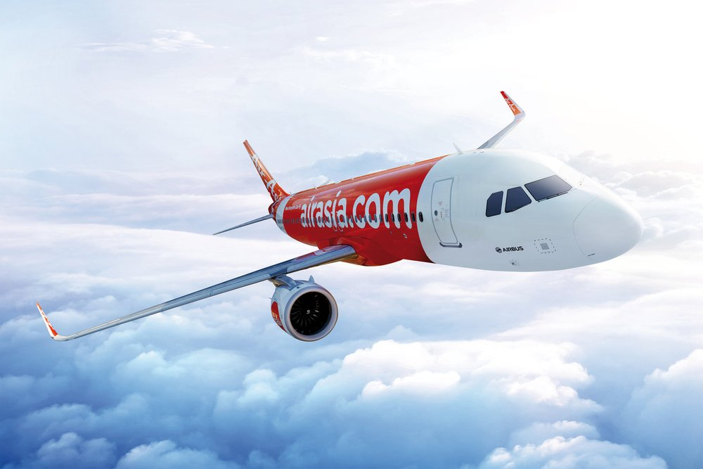
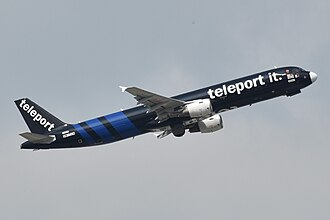

Capital A Berhad, operating as AirAsia (stylized as airasia) is a Malaysian multinational low-cost airline headquartered near Kuala Lumpur, Malaysia. Established in 1993 and commencing operations in 1996, the airline is the largest in Malaysia by fleet size and destinations. It operates scheduled domestic and international flights to over 166 destinations across 25 countries. Its primary hub is Kuala Lumpur International Airport (KLIA), where it utilizes Terminal 2, the low-cost carrier terminal.

The A320 has served as the workhorse of AirAsia's fleet since 2005.

Teleport, the cargo division of AirAsia, departing from Hong Kong International Airport